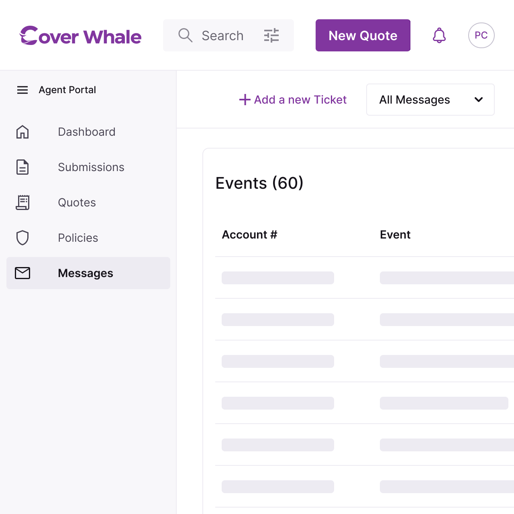
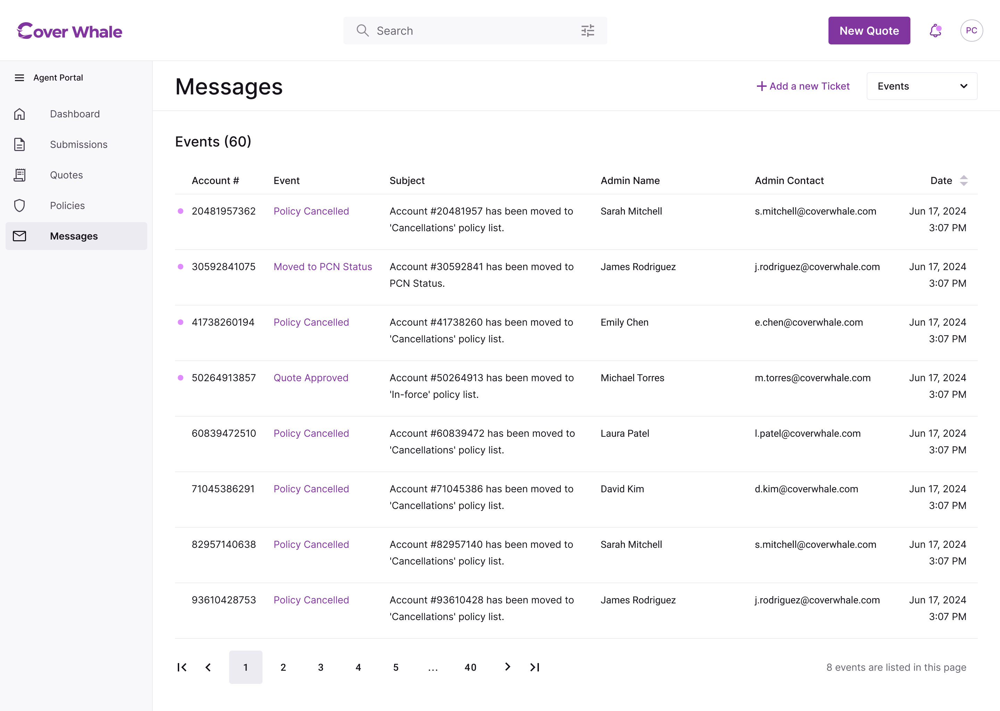
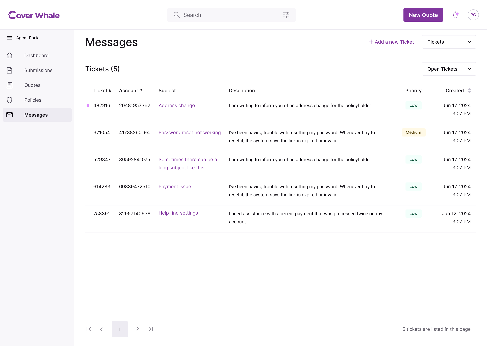
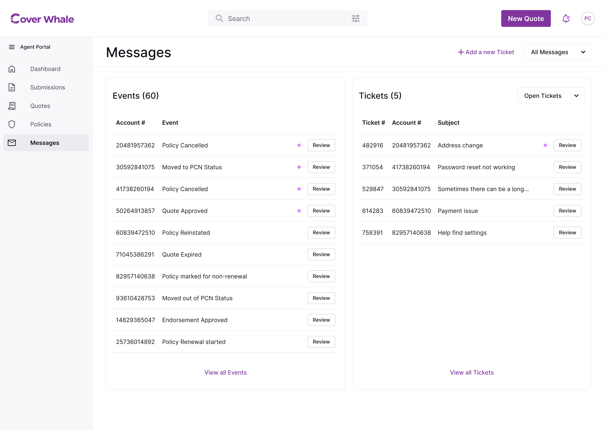
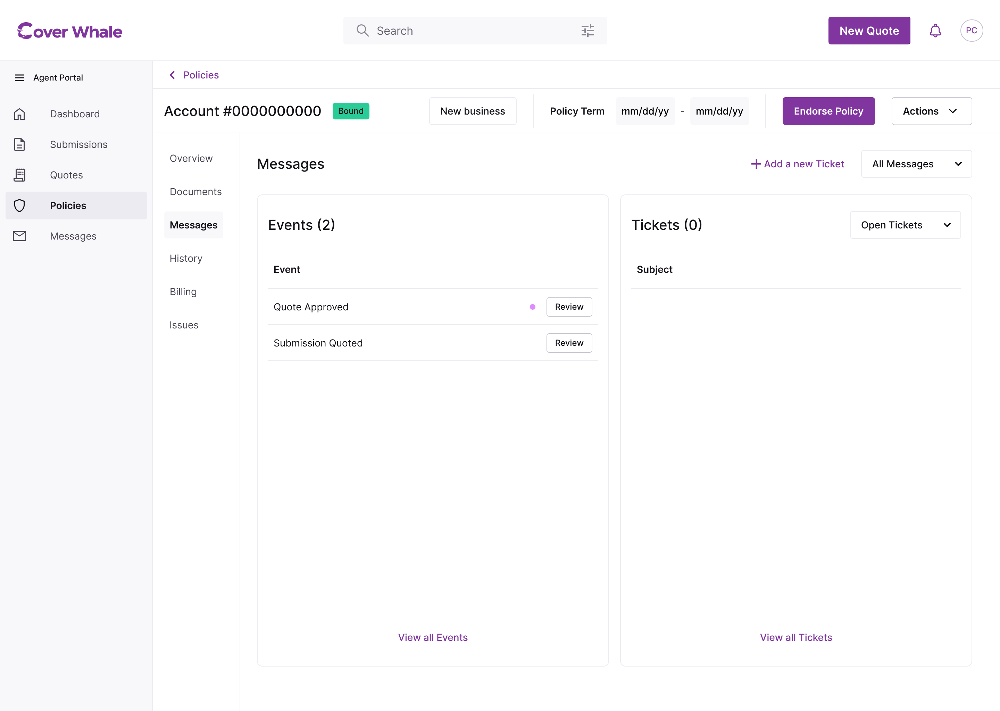
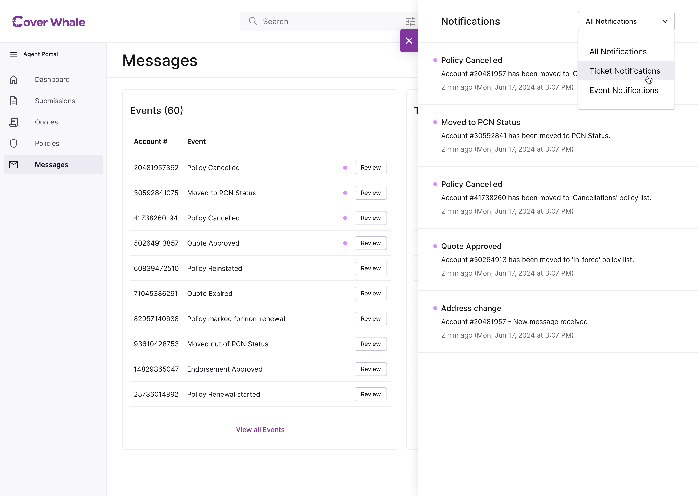
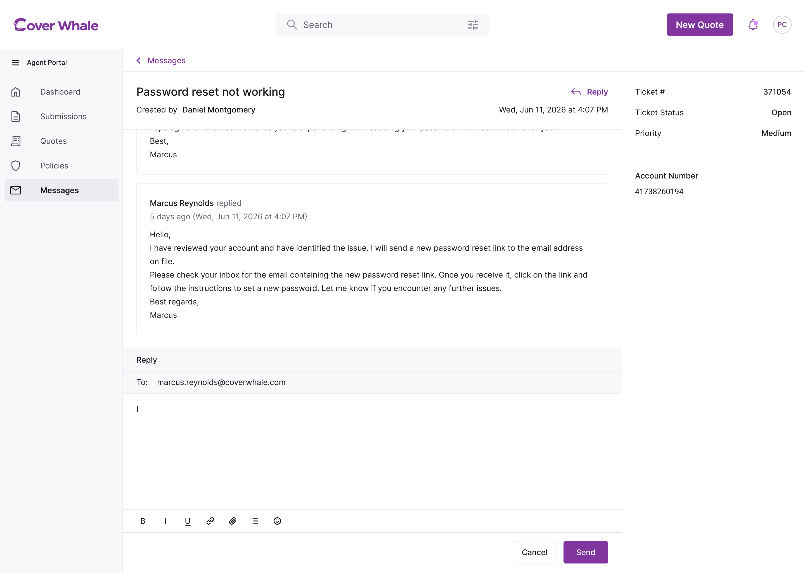

What I Owned
I led UX direction and design for the Messages system, Events/Tickets framework, and Notifications architecture — including the system model distinguishing Events from Tickets and the global-to-account view structure.
Designed a unified communication system for a platform where notes were attached to submissions, not accounts — meaning a long-term client's history was scattered across dozens of disconnected records. The fix wasn't a better inbox. It was a better identifier.

What I Owned
I led UX direction and design for the Messages system, Events/Tickets framework, and Notifications architecture — including the system model distinguishing Events from Tickets and the global-to-account view structure.
Who I Worked With
Ipek and Dilara (UX, Zurich vendor team), Murat (Front End). Internal stakeholders included the Head of CX, Underwriting, Billing, and Support leadership.
Prerequisite: The Account Model
This redesign was only possible because the platform architecture workstream had already established Account as the primary identifier. Without a stable, unified account record to attach communication to, consolidation of notes across the policy lifecycle would have had nothing to attach to.
A Structural Problem in Disguise
Notes were attached to submissions, not accounts. Every time an insured added a coverage line, a new submission was created — and with it, a new communication thread. An agent managing a long-term client could have the same insured's notes scattered across a dozen separate records with no unified view. This wasn't a communication problem. It was an information architecture problem wearing a communication costume.
Two Directions of Frustration
External: Agents were frustrated with Underwriter response times. Back-and-forth happened over email — outside the platform, untracked, with no visibility into status.
Internal: Notes and context weren't surviving the policy lifecycle. When a submission became a quote became a policy became a renewal, the history got fragmented. Agents were re-explaining context they'd already provided. Admins were working blind.
The Insight
By shifting from Submission to Account as the primary organizational unit, all communication could be consolidated under a single record per insured. Notes written during the submission stage would be visible when that same insured's policy came up for renewal two years later. An admin responding to a ticket would have the full account history in view. This was the prerequisite that made everything else possible.
Key Decision 01
Events are system-generated. Any action on an account — policy issuance, cancellation, reinstatement, status change — auto-generates an event, which also surfaces as a notification on the Messages page or the account's Messages tab. Agents don't initiate them; they're a running log of what the platform did and when.
Tickets are human-initiated. They bridge the gap between the platform and external communication — the phone calls and emails that previously happened outside the system with no record. An agent files a ticket, and two things happen: a thread opens in their Tickets view, and a new ticket opens in HubSpot where an admin is notified directly.
The distinction gives agents two different ways to scan their queue: what happened automatically, and what needs a human response.


Key Decision 02
Messages lives in two places. The Global Messages page shows Events and Tickets across every account, filterable by type — built for triage, where an agent scans everything and narrows down. The Account Messages tab shows the same view scoped to one insured, reached by clicking an account number anywhere in the platform — built for focused review, where an agent sees only that account's history.
Filing a ticket from the global view replaces the old "add a note" action. Since the global page has no account context of its own, the composer adds an account dropdown alongside the subject and description fields. Clicking Send opens a new thread in the agent's Tickets view and files a matching ticket in HubSpot, notifying an admin directly.
One system, two contexts, each suited to how the agent is working.


Key Decision 03
The notifications bell in global navigation opens a side drawer — available from anywhere in the platform — showing a running history of all events and tickets. Agents can navigate to specific items, filter by type, and see at a glance what's new since they last checked.
Status-based triggers make the queue meaningful without requiring the agent to go looking. Policy bound, policy at risk, NOC issued, submission declined, quote entering or exiting underwriting review — each generates a notification that surfaces automatically.

Key Decision 04
Once a ticket is open, the agent sees a structured view: ticket number, status, priority, response thread, and basic formatting tools.
The structured metadata was designed for both audiences simultaneously. The agent needs to track status across multiple open tickets. The admin needs to triage and prioritize from the HubSpot side without context-switching to the platform to understand what they're looking at.

What This Resolved
The account-level consolidation resolved a problem that had been causing real friction: agents repeating themselves, admins working blind, notes disappearing across submission records. Agents don't think about communication infrastructure — they think about whether they got a response. This made the response reliable.
What This Unlocked
The shift from submission-scoped to account-scoped communication was a forcing function for the rest of the architecture. It required the platform to have a stable, unified account identifier — which in turn made the lifecycle structure legible, the dashboard widgets meaningful, and the overview tabs coherent.
Good IA Is Invisible
The Messages redesign was the most invisible part of the platform. When information architecture is working, it disappears — nobody notices the structure because the experience just makes sense. Fixing the structure fixed the experience.
Series · Part 1 of 3
Platform Architecture & Navigation →